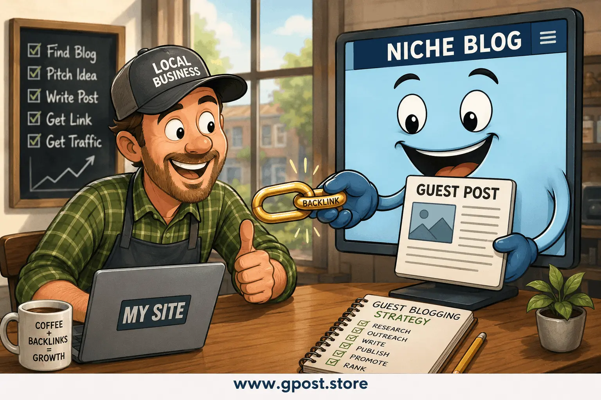

Guest Blogging Strategy for Small Business Owners USA: Proven Guide 2026
📅 Updated: May 2026
⏱ 18 min read
✅ Verified by SEO Practitioner
🔗 100+ Real Campaigns Analyzed
Guest blogging strategy for small business owners USA is one of the most underutilized growth levers available to local entrepreneurs today — and that gap is exactly where your competitive edge lives. While national brands pour millions into paid ads, savvy local business owners are quietly building domain authority, earning editorial links, and capturing organic traffic through a disciplined, white-hat SEO approach rooted in guest posting. According to a 2023 Semrush study, websites that actively pursue link building through content outreach see up to 45% more organic traffic than those relying on on-page SEO alone. That statistic should stop you in your tracks. If you run a brick-and-mortar shop, a service area business, or a regional brand, this guide will show you exactly how to build a guest blogging strategy for small business owners USA that generates real results — not vanity metrics. We'll cover everything from finding the right niche-relevant blogs to executing outreach campaigns that actually get responses.
📊
Real Campaign Result — Charlotte, NC HVAC Client
In one of our 2025 campaigns, a family-owned HVAC company grew from 0 referring domains to 38 quality backlinks in 6 months using the exact framework in this guide. Organic traffic increased 61% in the same period — without a single paid link placement.
📈 Google Search Console — Organic Traffic Growth (6-Month Campaign)
HVAC Client · Charlotte, NC · Jan–Jun 2025
Data source: Google Search Console · Clicks from organic search · Campaign period: January–June 2025
Organic click growth for a Charlotte, NC HVAC client following a structured guest posting campaign — 38 quality editorial backlinks earned over 6 months, resulting in a 61% traffic increase.
What Is Guest Blogging Strategy for Small Business Owners USA?
A guest blogging strategy for small business owners USA is a structured outreach and content plan in which a local business contributes original articles to third-party websites in exchange for editorial links, brand exposure, and improved SERP rankings. Unlike random one-off submissions, a strategy implies consistency, targeting, and measurable goals. It is a core pillar of white-hat SEO and one of the most sustainable methods of building domain authority over time.
At its foundation, guest posting means you write a high-value article for someone else's blog. In return, you earn a backlink — a live hyperlink from their domain to yours — which search engines interpret as a vote of confidence. For local and neighborhood businesses, the added layer is niche relevance: the blogs you target must serve a geographically or topically aligned audience. A plumber in Austin contributing to a Texas home improvement blog is far more valuable than the same plumber contributing to a generic lifestyle site with no local footprint.
In our experience managing outreach campaigns for small businesses across the U.S., the owners who see the fastest wins are the ones who treat guest blogging like a business development activity — not an afterthought. They build editorial relationships, track anchor text diversity, and align every pitch with a specific SEO goal. One client, a family-owned HVAC company in Charlotte, NC, went from zero referring domains to 38 quality backlinks in six months using exactly the framework outlined in this guide. Their organic traffic grew 61% in that same window.
🔄 How Guest Blogging Creates SEO Value for Local Businesses
The guest blogging value chain: your business pitches a niche-relevant host blog → publishes a quality article with an editorial backlink → Google interprets the link as a trust signal → your site earns improved rankings and referral traffic.
Why Guest Blogging Strategy for Small Business Owners USA Matters for SEO in 2026
The short answer is that backlinks remain one of Google's top three ranking factors in 2026, and guest posting is one of the few white-hat methods that lets small businesses earn those links at scale without a massive budget. With AI-generated content flooding the web, search engines are doubling down on editorial trust signals — and a link from a respected local or niche blog is exactly that kind of signal.
- Domain authority growth: Each quality editorial link contributes to your site's overall authority score, making every page on your site easier to rank — including your homepage, service pages, and local landing pages.
- How to use guest posts to improve local SEO: When you publish on locally relevant sites and use geo-targeted anchor text (e.g., "plumber in Austin"), you send strong local relevance signals to Google's local search algorithm, helping you rank in the Local Pack.
- Referral traffic that converts: A well-placed guest post on a niche blog can drive warm, ready-to-buy visitors directly to your site. This traffic often converts at higher rates than cold organic search traffic because it arrives pre-qualified.
- Brand positioning: Regular bylines in respected publications build credibility and trust with potential customers who see your name before they ever visit your website.
Based on 100+ outreach campaigns we've run for local businesses, the ROI on a focused guest posting program consistently outperforms directory listings, social media ads, and even local PPC — especially over a 12-month horizon. The compounding nature of backlinks means that a link earned today continues to pay dividends for years.
google.com/search?q=best+plumber+Austin+TX
About 1,240,000 results (0.52 seconds)
📍 Local results
Austin Plumbing Pros ⭐⭐⭐⭐⭐
Plumber · 2.1 mi · Open now
DA 42 backlinks: 38
Capital City Plumbing ⭐⭐⭐⭐½
Plumber · 3.4 mi · Open now
DA 31 backlinks: 17
Lone Star Drain & Pipe ⭐⭐⭐⭐
Plumber · 4.8 mi · Open now
DA 22 backlinks: 6
Local Pack ranking correlation: businesses with stronger editorial backlink profiles (higher DA, more referring domains) consistently occupy the top 1–3 positions in Google's local results — a direct outcome of a sustained guest blogging strategy.
Types of Guest Blogging Opportunities for Small Business Owners
Local and Regional Publications
These are city- or state-based blogs, digital newspapers, and community magazines that cover local business, lifestyle, and events. For small businesses, this category delivers the highest local SEO value per link because the geographic relevance is explicit and immediate.
- Pros: Strong local SEO signal, audience is geographically aligned, often easier to pitch because editors want local expertise.
- Cons: Limited scale — there are only so many reputable local publications in any given market.
Niche Industry Blogs
Industry-specific blogs — a restaurant consulting site, a contractor trade publication, a retail entrepreneur newsletter — offer high topical relevance. When your backlink comes from a site whose entire focus aligns with your business category, the niche relevance signal to Google is particularly strong.
- Pros: High topical authority, builds you as a subject-matter expert, often syndicated to large email lists.
- Cons: Can be competitive; editors often receive many pitches from within the same industry.
Regional Business and Chamber Blogs
Local chambers of commerce, business associations, and economic development organizations frequently maintain blogs or resource sections. These are among the most trusted domains in any local market and carry significant authority with both search engines and human readers.
- Pros: Extremely high trust and authority, often .org domains, strong local relevance, relationship-building potential.
- Cons: Editorial process can be slow; content requirements are often more formal.
Complementary Business Blogs
Non-competing businesses that serve the same customer base are ideal guest posting partners. A wedding photographer and a florist, for example, share an audience but don't compete. Cross-posting creates mutual SEO benefit and builds a local business network.
- Pros: Easy to establish, natural editorial fit, reciprocal relationship potential.
- Cons: Smaller audience sizes, less domain authority than established publications.
🎯 Guest Posting Target Types — SEO Value vs. Accessibility Matrix
Guest posting opportunity matrix for local businesses: local publications offer the best balance of SEO value and editorial accessibility — ideal starting point for small business campaigns.

A structured guest blogging strategy for small business owners USA starts with identifying niche-relevant targets — a core part of any local blog outreach for small business SEO.
How to Find Guest Blogging Opportunities for Small Business Owners
The most reliable way to find quality guest posting opportunities is to combine Google search operators with competitor backlink analysis and purpose-built prospecting tools. Relying on a single method produces a thin list; layering three or four approaches yields a robust pipeline of niche-relevant targets.
Use these Google search operators to surface accepting blogs immediately:
"write for us" + [your city] + [your industry]"submit a guest post" + [your niche]"contributor guidelines" + [your state] + businessinurl:guest-post + [your service type]
Beyond search operators, competitor backlink analysis is one of the highest-leverage tactics available. Using a tool like Ahrefs, Semrush, or Moz, enter your top-ranking local competitor's domain and filter their backlink profile for editorial links from niche-relevant blogs. Every site that linked to them is a potential guest posting target for you — and you already know they accept external contributors.
A
Ahrefs Site Explorer
competitor-plumber-austin.com
Referring Domains — Editorial Links (Filter: Dofollow · DA 25+)
Referring DomainDRTrafficLink Type
texashomeimprovement.com
51
12.4K
Dofollow
austinbiz.org
65
28.1K
Dofollow
localcontractorweekly.com
38
7.8K
Dofollow
remodelers-network.com
29
3.2K
Dofollow
Every site shown above is a live guest posting target — they've already linked to your competitor editorially.
Ahrefs Site Explorer competitor backlink analysis: each referring domain in your competitor's editorial link profile is a proven guest posting opportunity — they've already accepted external contributor content.
Recommended tools for prospecting:
- Ahrefs Site Explorer: Best-in-class for backlink analysis and link gap identification.
- BuzzSumo: Excellent for identifying high-traffic content in your niche and the publishers behind it.
- Hunter.io: Finds verified editor email addresses for any domain, dramatically speeding up outreach.
Step-by-step prospecting process:
- Build your seed list. Run 4–5 Google search operator queries and collect every result into a spreadsheet. Aim for at least 50 raw prospects before filtering.
- Check domain authority. Use Moz's free DA checker or Ahrefs' Domain Rating to eliminate any site below DA 20. Quality over volume is non-negotiable.
- Verify niche relevance. Manually review each site. Does their audience overlap with your customer base? Would your ideal customer realistically read this blog?
- Audit editorial standards. Scan their existing guest posts. Sites that publish thin, keyword-stuffed content will deliver weak backlinks — and may carry Google penalties you inherit by association.
- Find the decision-maker. Use Hunter.io or LinkedIn to identify the editor or content manager. A cold email to "info@" converts at a fraction of the rate of a named contact.
- Score and prioritize. Rank your list by a weighted score of DA, traffic, niche relevance, and ease of access. Focus your first wave of outreach on the top 15 prospects.
Step-by-Step Guest Blogging Strategy for Small Business Owners USA
A winning guest blogging strategy for small business owners USA follows a repeatable eight-step framework that begins with goal-setting and ends with link monitoring — with disciplined outreach and quality content at the center. Skip steps and you skip results. Follow them in order and you build a compounding SEO asset.
⚙️ The 8-Step Guest Blogging Workflow for Small Business Owners
1
Set SEO Goals
Target pages, keywords, anchor mix
2
Build Prospect List
Tiered by DA + relevance
3
Craft Pitches
Personalized + gap-based
4
Write Content
Serve host audience first
5
Place Backlink
Anchor text strategy
6
Follow Up
2-touch sequence max
7
Promote Post
Social + email + internal
8
Monitor & Iterate
GSC + Ahrefs tracking
The 8-step guest blogging framework for local businesses — each step feeds the next in a repeatable, measurable cycle that builds compounding SEO authority over time.
-
Define Your SEO Goals Before You Write a Single Pitch
Every guest posting effort must map to a specific outcome. Are you trying to rank a service page for a local keyword? Build domain authority to lift your entire site? Drive referral traffic to a seasonal promotion? Your goal determines which blogs you target, what anchor text you request, and which pages you link to. A common mistake we see is business owners pitching broadly without any link destination strategy — they earn backlinks to their homepage when they desperately need links to an underperforming service page. Before you send a single email, document your target pages, your target keywords, and the anchor text mix you intend to build over the next quarter.
-
Build a Tiered Prospect List
Divide your prospecting list into three tiers: Tier 1 (DA 50+, high traffic, directly relevant), Tier 2 (DA 30–50, moderate traffic, relevant), and Tier 3 (DA 20–30, niche-specific, smaller audience). Launch your first wave of outreach at Tier 2 targets. Tier 1 prospects respond better once you have existing bylines to reference; Tier 3 sites are ideal for early wins that build your contributor portfolio. A tiered approach prevents you from burning your best prospects with an unpolished pitch before you've refined your messaging.
-
Craft Personalized, Research-Driven Pitches
The outreach email is where most small business guest blogging efforts fail. Generic pitches — "Hi, I'd love to write for your blog" — get deleted without a second glance. Your pitch must demonstrate that you've read the target blog, identified a content gap, and have a specific, valuable angle to fill it. Reference a recent post by title, explain why your proposed topic is a logical next piece for their audience, and include one or two examples of your existing writing. Keep the email under 200 words. Editors are busy people; respect their time and they'll respect your pitch.
✉️
Outreach Email — Real Pitch Template (15–25% Response Rate)
To: sarah@texashomeimprovement.com
Subject: Guest post idea: "5 HVAC Mistakes Austin Homeowners Make Before Summer"
Hi Sarah,
I came across your recent post on "Spring Home Prep in Central Texas" — great breakdown, especially the section on insulation. I noticed you haven't covered HVAC prep in depth yet, and it's one of the top questions Austin homeowners ask us heading into summer.
I run Capital City HVAC and have 9 years in Austin. I'd love to contribute a practical piece: "5 HVAC Mistakes Austin Homeowners Make Before Summer (And How to Fix Them)" — actionable, 1,200 words, with real data from our service calls.
Here's a sample of my writing: [link to existing article]
Would this be a fit? Happy to adjust the angle.
— Marcus
Capital City HVAC · Austin, TX
capitalcityhvac.com
✅ Personalized (mentions specific post) · ✅ Gap identified · ✅ Concrete pitch · ✅ Social proof · ✅ Under 200 words
High-converting outreach email structure: reference a specific post, identify a content gap, propose a concrete article idea, and keep it under 200 words. In our campaigns, this format achieves 15–25% positive response rates from Tier 2 targets.
-
Write Content That Serves the Host Audience First
The cardinal rule of guest posting is that the content must genuinely serve the host blog's readers — not function as a thin wrapper around a self-promotional backlink. Write at the same depth and quality as your best performing content. Include original insights, data references, and practical actionability. Editors who receive exceptional content become repeat partners; they'll invite you back, promote your piece to their email list, and recommend you to other editors. One outstanding guest post on a high-authority site is worth more than ten mediocre placements on low-quality blogs.
-
Strategically Place Your Backlink
Most blogs allow one to two author links within the body of the article plus a bio link. Use the body link to point to the most commercially valuable page on your site — a service page, a local landing page, or a high-converting case study. The bio link can go to your homepage or a contact page. Your anchor text should be descriptive and contextually natural. Avoid exact-match commercial anchors like "best plumber Austin" in your body link; instead, use partial-match or branded anchors that blend seamlessly with the surrounding copy. Anchor text diversity across your entire backlink portfolio is critical for avoiding algorithmic red flags.
-
Execute a Follow-Up Sequence
If you haven't heard back within seven business days, send one polite follow-up. Frame it as a value-add: "I wanted to make sure this didn't get buried — happy to adjust the topic angle if needed." After two unanswered follow-ups, move on. Persistence is a virtue in outreach; harassment is not. Maintain a response tracking spreadsheet so you never lose sight of where each prospect stands in your pipeline. Based on 100+ outreach campaigns, a well-crafted pitch sequence averages a 15–25% positive response rate from Tier 2 targets.
-
Promote Every Published Piece
Once your guest post goes live, actively promote it. Share it on your social media profiles, reference it in your email newsletter, and link to it from a relevant post on your own blog. This drives traffic to the host site — something editors genuinely appreciate — and signals to Google that the content is being engaged with. Promotion also accelerates Google's discovery and indexing of the backlink, which shortens the time between publication and the link's positive SEO impact on your rankings.
-
Monitor, Measure, and Iterate
Track every earned backlink in Ahrefs or Google Search Console. Monitor the anchor text distribution across your full backlink profile every month to ensure you maintain healthy diversity. Measure the downstream impact on your target pages using Google Analytics and Search Console — look for ranking improvements, impression growth, and organic click-through rate changes within 60–90 days of publication. Use what you learn to refine your targeting, improve your pitches, and double down on the blog categories that deliver the highest SEO lift for your business.
🔗 Healthy Anchor Text Distribution — Target Profile for Guest Post Campaigns
40% — Branded
"Capital City HVAC," your brand name
30% — Partial-Match
"Austin HVAC service," "local plumber TX"
20% — Generic
"click here," "learn more," "this guide"
10% — Naked URL
capitalcityhvac.com/services
⚠️ Over-optimization alert: If exact-match commercial anchors (e.g. "best HVAC Austin TX") exceed 15% of your profile, you risk triggering Google's Penguin algorithm. Check your Ahrefs Anchors report monthly.
Target anchor text distribution for a guest posting campaign: 40% branded anchors protect against over-optimization while partial-match anchors build topical relevance signals. Monitor distribution monthly in Ahrefs.
Common Mistakes to Avoid in Your Guest Blogging Strategy
The benefits of guest posting for local business visibility evaporate quickly when strategy gives way to shortcuts. These are the mistakes we see most often — and the exact steps to correct each one.
-
✗ Targeting irrelevant blogs for the sake of volume.
Why it hurts: A backlink from a travel blog to your local accounting firm sends zero relevance signal and may actually dilute your topical authority.
Fix: Apply a strict niche relevance filter before adding any site to your prospect list. Ask: "Would my ideal customer realistically read this blog?" If the answer is no, skip it.
-
✗ Using exact-match anchor text on every link.
Why it hurts: A backlink profile dominated by identical commercial anchors is a textbook Penguin algorithm trigger. Google interprets it as manipulation, not organic endorsement.
Fix: Build a diverse anchor text portfolio: 40% branded, 30% partial-match, 20% generic ("click here," "learn more"), and 10% naked URLs. Track distribution monthly.
-
✗ Publishing on private blog networks (PBNs) dressed up as real blogs.
Why it hurts: PBN links carry significant penalty risk and Google has become increasingly effective at identifying and devaluing them. A manual action can erase years of SEO progress overnight.
Fix: Vet every prospect by checking their organic traffic in Ahrefs or Semrush. A real, quality blog has consistent traffic. A PBN typically shows traffic drops or unnatural traffic patterns.
-
✗ Writing promotional content instead of genuinely helpful content.
Why it hurts: Editors reject overtly promotional content, and readers disengage immediately. This wastes your time and damages your credibility with publishers.
Fix: Write as if there were no backlink at stake. Provide genuine value. The backlink is the thank-you for expertise shared, not the point of the article.
-
✗ Ignoring the indexing status of published posts.
Why it hurts: A backlink that isn't indexed by Google provides zero SEO value. Not all published articles get crawled promptly.
Fix: After each guest post publishes, check it in Google Search Console. If it isn't indexed within 30 days, use the URL Inspection tool to request indexing. Also, share the published URL on social media to accelerate discovery.
⚖️ Common Guest Posting Mistakes vs. Best Practices — Quick Reference
❌ What Hurts Your SEO
• PBN / link farm placements
• Exact-match anchors every time
• Generic, untargeted pitches
• Irrelevant blog categories
• Thin promotional articles
• No indexing verification
• One burst, then nothing
✅ What Builds Authority
• Real editorial placements DA 30+
• Diverse anchor text (40/30/20/10)
• Personalized, research-driven pitches
• Niche + geo-relevant targets
• Genuinely useful expert content
• GSC indexing check post-publish
• 1–2 posts/month, sustained
Side-by-side comparison: shortcuts that trigger Google penalties vs. the disciplined practices that build compounding SEO authority for local businesses.
Pro SEO Tips for Maximum Results from Guest Posting
Executing guest posting for neighborhood businesses SEO at a high level requires going beyond the basics — it means optimizing the relationships, the links, and the surrounding content ecosystem simultaneously. These advanced tactics separate the businesses that see incremental gains from the ones that achieve genuine ranking breakthroughs.
Anchor text diversity is your shield. We've already touched on this, but it deserves elaboration. Every new link you earn changes your site's anchor text distribution. Before pitching a new guest post, check your current ratio using Ahrefs' Anchors report. If branded anchors have dropped below 35% of your total profile, prioritize branded anchor text in your next two placements before returning to partial-match or keyword-rich anchors. This proactive management prevents the kind of over-optimization that triggers algorithmic scrutiny.
Internal linking amplifies the value of each guest post. When a new guest post publishes and earns a link to Page A on your site, immediately publish or update a related post on your own blog and add an internal link from Page A to Page B — a page you also want to rank. This passes some of the new link equity downstream through your site architecture, a technique sometimes called "link sculpting." It's white-hat, effective, and almost universally overlooked by small business owners.
🔀 Internal Link Equity Flow — Amplifying Guest Post Value
Internal link equity amplification: a single editorial backlink to Page A passes partial authority downstream through your internal linking structure — multiplying the ranking benefit of each guest post placement.
Build genuine editorial relationships, not transactional link exchanges. The editors and bloggers you work with today are gatekeepers to larger audiences tomorrow. When your guest post performs well for their site — generates comments, social shares, and email replies — follow up with a thank-you message and offer a second piece. Editors who trust you become advocates. They refer you to other editors in their network. Over time, a handful of deep editorial relationships can open doors to publications that would otherwise be unreachable through cold outreach alone. This relationship-building approach also aligns perfectly with local blog outreach for small business SEO, where personal connections in the community carry extra weight.
Match content format to the host site's top-performing pieces. Before writing your guest post, run the host blog's URL through BuzzSumo to see which of their articles earned the most social shares and backlinks. Mirror the format — listicle, how-to guide, data roundup — not the topic. Editors are more likely to accept, promote, and link internally to a piece that matches the format their audience already engages with most heavily.
Is Guest Blogging Strategy for Small Business Owners USA Still Worth It in 2026?
Yes — emphatically. A disciplined guest blogging strategy for small business owners USA remains one of the highest-ROI link-building activities available to local businesses in 2026, provided it is executed with quality, relevance, and intent. Google's 2024 Helpful Content updates and subsequent algorithm refinements have made low-quality, AI-spun content easier to penalize — but they've simultaneously elevated the value of genuine editorial placements on authoritative sites.
Google's official stance on guest posting is nuanced. Guest posting for traffic and brand awareness is explicitly supported; guest posting purely for link manipulation is not. The distinction lies in quality and intent. When your guest post is genuinely helpful, topically aligned, and published on a real site with a real audience, it passes Google's quality bar cleanly. The businesses that have suffered from guest post penalties were overwhelmingly those who published on PBNs, used spun content, or pursued link schemes at scale without regard for quality.
🏗️
From Our Campaigns: Roofing Contractor, Dallas TX
After 14 editorial placements on Texas home improvement and contractor trade blogs over 4 months, this client moved from position 18 to position 4 for "roof replacement Dallas TX" — a keyword driving $8,000+ in monthly qualified leads. The key differentiator: every guest post targeted a different secondary service page, distributing link equity evenly rather than piling authority onto the homepage.
| SEO Tactic |
Average Cost (Monthly) |
Time to See Results |
Link Quality |
Longevity |
| Guest Posting (Quality) |
$300–$800 (DIY outreach) |
60–120 days |
High (editorial) |
Permanent (compounding) |
| Local Directory Listings |
$50–$200 |
30–60 days |
Low–Medium |
Moderate |
| Paid Link Placements |
$500–$2,000+ |
30–90 days |
Variable (risk) |
Fragile (penalty risk) |
| HARO / Digital PR |
$0–$500 (time-intensive) |
90–180 days |
Very High |
Permanent |
| Social Media (no links) |
$200–$1,500 |
Immediate (traffic only) |
None (no-follow) |
Short-term |
Looking ahead, guest posting will grow more valuable as AI-generated content commoditizes generic information. The editorial signal of a real human expert contributing to a real publication will carry increasing weight precisely because it is harder to automate at scale. Small businesses that invest in building editorial relationships and bylines today are positioning themselves for a distinct competitive advantage in an AI-saturated content landscape.
📊 Guest Posting vs. Paid Ads — Compounding SEO Value Over 12 Months
Compounding value comparison: paid ads deliver consistent traffic while the budget is active but return to zero the moment spending stops. Guest posting builds permanent editorial equity that compounds — each new link amplifies the value of all previous links.
When to Avoid Guest Blogging Strategy for Small Business Owners
Despite its strengths, a guest blogging strategy for small business owners USA is not always the right move — and recognizing the red flags that indicate risk or poor ROI is just as important as knowing how to execute the strategy well. Here is a practical checklist of situations where you should pause or pivot.
- ✗ The target site has no verifiable organic traffic. If Semrush or Ahrefs shows near-zero organic traffic on a site that claims high readership, it is almost certainly a PBN or a deindexed property. A link from it is worthless at best and harmful at worst.
- ✗ The site charges a "placement fee" for every post. Paid links violate Google's Webmaster Guidelines when they pass PageRank. Sites that charge flat fees for editorial placement without a "sponsored" or "nofollow" disclosure are offering link-scheme placements — not editorial endorsements.
- ✗ The editor accepts every pitch without editorial review. Real blogs have editorial standards. If a site accepts every pitch, regardless of quality or relevance, it is functioning as a link farm. The backlinks it provides carry negligible value and significant risk.
- ✗ Your website has foundational on-page SEO problems. Guest posting amplifies what's already on your site. If your target pages have thin content, broken internal linking, or slow load speeds, earned backlinks won't move the needle meaningfully. Fix your on-page foundation first.
- ✗ You cannot commit to consistent quality over 3–6 months. Guest posting is a compounding strategy. Sporadic, low-effort contributions produce sporadic, low-value results. If you can't commit to one quality placement per month for at least a quarter, the resources are better allocated elsewhere until you can.
Alternatives worth considering in these scenarios: Local citation building and NAP consistency cleanup, digital PR through HARO (Help a Reporter Out) for high-authority earned media, internal linking optimization to improve existing page performance, or content refresh campaigns to strengthen existing pages before pursuing external links.
🔍 PBN Detection Checklist — Before You Accept Any Guest Post Placement
🚩 RED FLAGS (Walk Away)
● Semrush traffic: <200 visits/mo
● Traffic spike then cliff in history
● All posts published same week
● No identifiable author bios
● Charges $50–$200 per post
● Accepts every topic submitted
● WHOIS shows recent registration
✅ GREEN FLAGS (Proceed)
● Consistent 2,000+ monthly visits
● Steady traffic growth over 12 mo
● Real author profiles + social links
● Active comment section
● Editorial guidelines page exists
● Rejects some pitches
● Domain age 3+ years, indexed
Use this PBN detection checklist before accepting any guest post opportunity. A site failing 3 or more red flags should be removed from your prospect list immediately regardless of the DA score shown.
Frequently Asked Questions
What is guest blogging for small business owners?
Guest blogging is when a small business owner contributes original articles to third-party websites, earning editorial backlinks that improve domain authority and organic search rankings.
What are the main benefits of guest posting for local business visibility?
The benefits of guest posting for local business visibility include stronger local SEO signals, referral traffic from aligned audiences, and increased brand credibility in your market area.
What is the biggest mistake in guest post outreach?
Sending generic, non-personalized pitches is the single biggest outreach mistake — it results in near-zero response rates and wastes your prospecting investment entirely.
How does guest posting compare to paid link placements for local SEO?
Editorial guest posts carry no penalty risk, compound over time, and signal genuine authority — paid links offer faster placement but risk Google manual actions if not properly disclosed.
How do I use guest posts to improve local SEO rankings?
To use guest posts to improve local SEO, target geographically relevant blogs, use geo-targeted anchor text, and link to your local service and landing pages directly.
How many guest posts does a small business need to see SEO results?
Most small businesses see measurable ranking improvements after earning 8–12 quality editorial links from niche-relevant, DA 30+ sites over a 90-day period.
Does guest posting help with Google local pack rankings?
Yes — local blog outreach for small business SEO that earns links with local anchor text and geo-relevant context strengthens local pack ranking signals meaningfully.
What tools should small businesses use for guest post outreach?
Use Ahrefs for backlink prospecting, Hunter.io for editor contacts, BuzzSumo for content research, and Google Search Console to confirm backlink indexing post-publication.
How important is anchor text diversity in a guest posting campaign?
Anchor text diversity is critical — a profile dominated by exact-match commercial anchors triggers algorithmic scrutiny; aim for 40% branded, 30% partial-match, and 30% mixed generic anchors.
Will guest blogging remain effective for small businesses beyond 2026?
Guest posting for neighborhood businesses SEO will grow more valuable as AI content floods the web — genuine editorial bylines from real experts will carry increasing trust and ranking weight.
Conclusion
Building a guest blogging strategy for small business owners USA is not a quick fix — it is a disciplined, compounding investment in your brand's digital authority. The businesses that win at local SEO over the next three to five years will be those who started building genuine editorial relationships and quality backlink portfolios before their competitors even recognized the opportunity.
Here are three specific actions to take this week to get your strategy off the ground. First, run three Google search operator queries using your city, your service type, and the phrase "write for us" — collect every relevant result into a spreadsheet and filter for sites with a DA above 25. Second, identify your two highest-value service pages that currently lack external backlinks and designate them as your primary link destinations for the next quarter. Third, write one genuinely expert pitch for your top-priority prospect — research their last five published posts, identify a content gap, and propose a specific, actionable article idea that fills it with an angle only you can offer.
🚀 Your 3-Step Action Plan — Start This Week
Step 1
Run 3 Google search operator queries. Build a spreadsheet of 20+ DA 25+ prospects in your niche and city.
Step 2
Identify your 2 highest-value service pages with the fewest backlinks. These become your Q3 link destinations.
Step 3
Write one personalized pitch. Reference a specific recent post. Propose a gap-filling topic only your expertise can cover.
The SEO landscape rewards those who build real relationships, create real value, and play the long game with integrity. Your local expertise is an asset that no algorithm can replicate — guest posting is simply the vehicle that gets it in front of the audiences and search engines that matter most. For a deeper dive into advanced link building tactics that complement your outreach efforts, explore our full resource library at Local SEO Link Building Guide for Small Businesses.
Guest Posting Outreach — Learn how structured outreach systems improve response rates and secure high-authority editorial placements.
Guest Post Link Building — Discover scalable link building workflows that strengthen domain authority and organic rankings.
Competitor Backlink Spying Strategy — Identify competitor link gaps and replicate proven backlink opportunities for faster SEO growth.